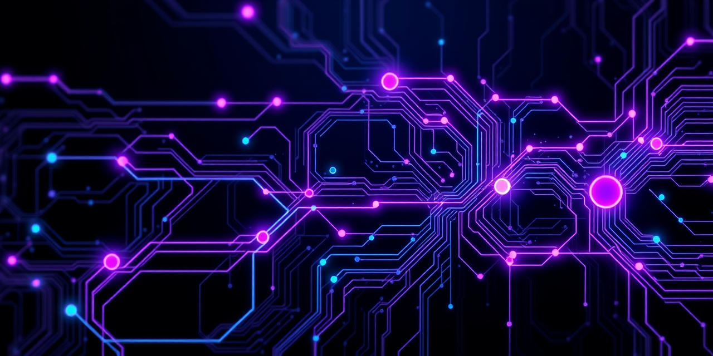

Multi-agent orchestration systems built from scratch. Agents that coordinate via tmux and email, manage themselves with automated context refresh, and ship production software — without cloud dependencies.
A cognitive engine in active R&D, developed alongside the robotics program. Cortex OS aims to formalize the agentic orchestration patterns built over 18 months into a sellable solution — in partnership with a Swiss foundation. Not a framework. An operating system for cognition.
Multi-agent orchestration: STRAT/DEV pairs coordinated via tmux. Inter-agent communication. Automated context refresh. Real-time observability dashboard (Panda Portal). 23 projects, 7 agents, 100% local execution.
iOS app already running. Revolutionizing learning methods with Swiss PER curriculum alignment and neurocognitive analytics. Linked to a sponsorship and patronage strategy. Built on the Exam Genius multi-agent engine.
Live on the Apple App Store. AI-powered exam preparation platform. The first concrete product from the education pipeline, proving the approach works in production.
4 agents built a complete iOS expense tracker in 2h20. 95.4% OCR accuracy, 8 languages, Swiss VAT handling. Documented in an IEEE-format paper (Sept 2025). The proof that the agentic farm delivers real products.
1,000 original tracks on SoundCloud. Every note played by hand, no generative AI. Custom DAW (FastDAW), AI-assisted orchestral transposition. Twitch streaming daily.
In-depth investigative analysis of the OpenClaw/Clawdbot phenomenon: the $1.1–2.4B annual extraction pattern, the Solana token manipulation, and the industrial capture by GAFAM. Our agentic farm predates it by 2 months.
| Date | Milestone | Significance |
|---|---|---|
| Sept 2023 | CloudMind — AI infrastructure | Kubernetes, Azure AKS, Docker, Pinecone vectors, Streamlit |
| Q1 2024 | Project Nexus — Dynamic agent composition | MasterAI composes/dissolves agent teams from PRDs, 14 months before the market |
| Oct 2024 | Exam Genius — AI education platform | Multi-agent exam generation, neurocognitive analytics, Claude API |
| Sept 2025 | Moulinsart — First Agentic Farm | 4 agents, tmux, email communication, IEEE paper published |
| Jan 2026 | Nestor v2 — Production Farm | Portal, vector memory (23K+ items), multi-machine orchestration |
| Mar 2026 | 324 tasks, 16 sprints complete | 23 projects managed, 7 agents, Cortex OS in development |
| Layer | Stack |
|---|---|
| Languages | TypeScript, Python, Swift, Go, Dart |
| AI / ML | Claude, Gemini, Ollama, Nemotron 120B, Whisper, ComfyUI |
| Infrastructure | Bun, Vue 3, SQLite, usearch, tmux, launchd |
| Hardware | Mac M3 Ultra, Nvidia DGX Spark (Blackwell), Mac M2 Ultra, Mac M4 Max, Apple Vision Pro |
| Robotics | Exoskeleton kits (assistive), humanoid and quadruped robots (incoming) |
| Music Production | Casio GP-510 (C. Bechstein grand action), Kawai (triple escapement), Kawai MP11SE, Roland TD-50, Universal Audio Apollo x4, Austrian Audio microphones |
| Philosophy | Local-first. No Docker for apps. No cloud dependency. |